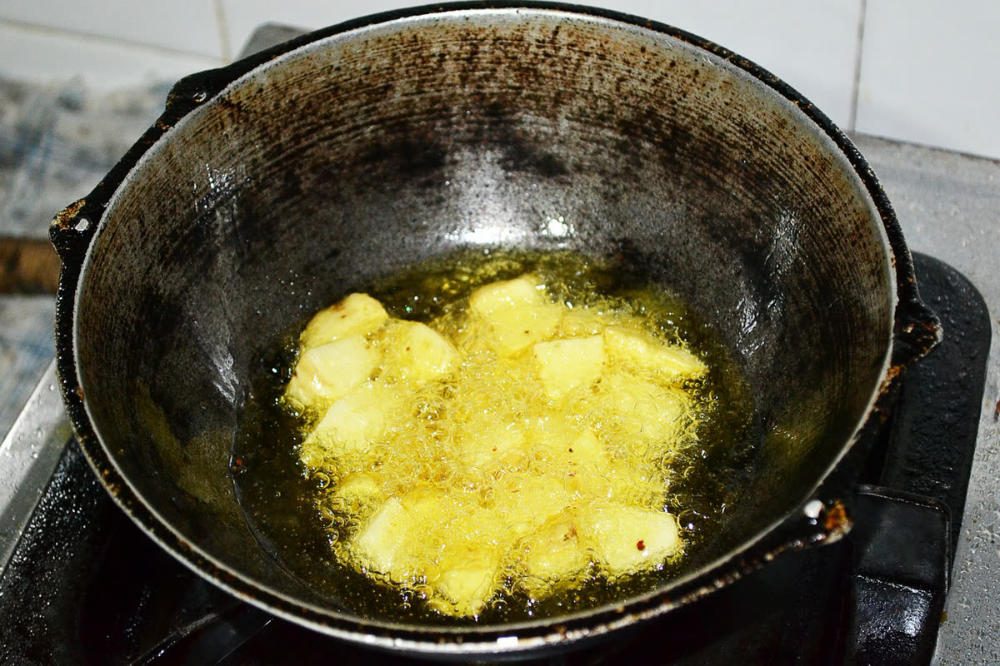
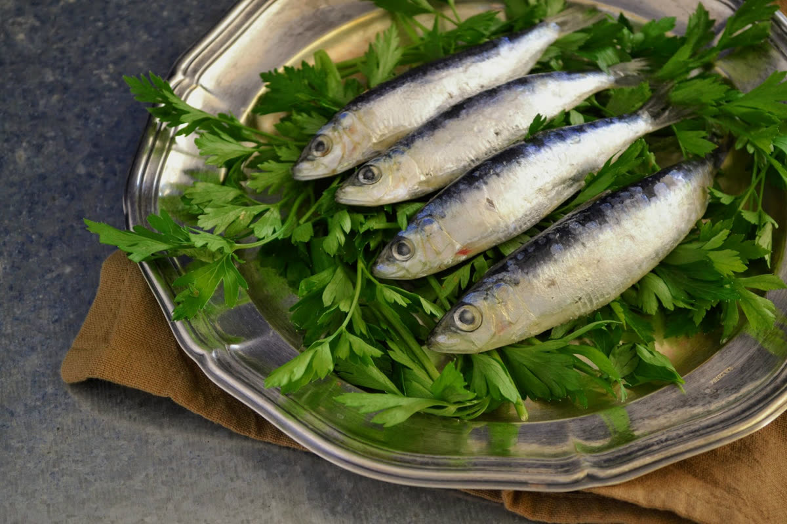
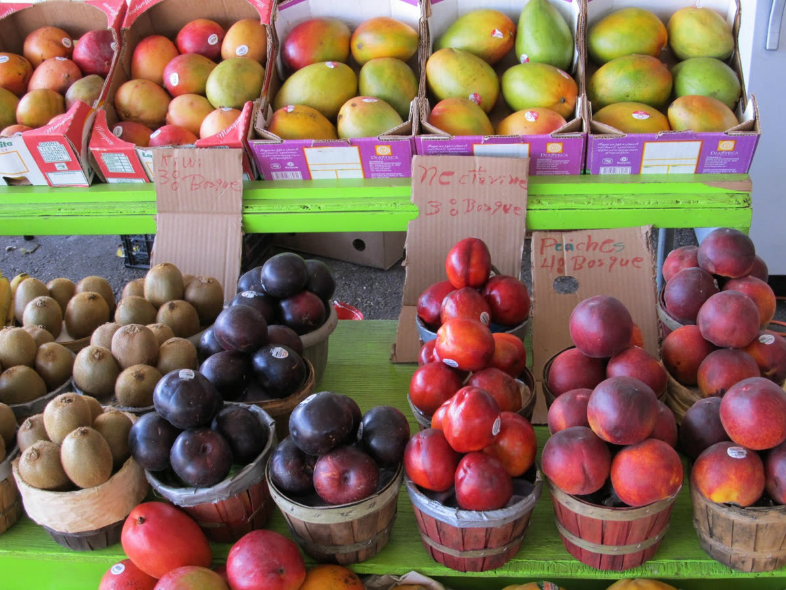
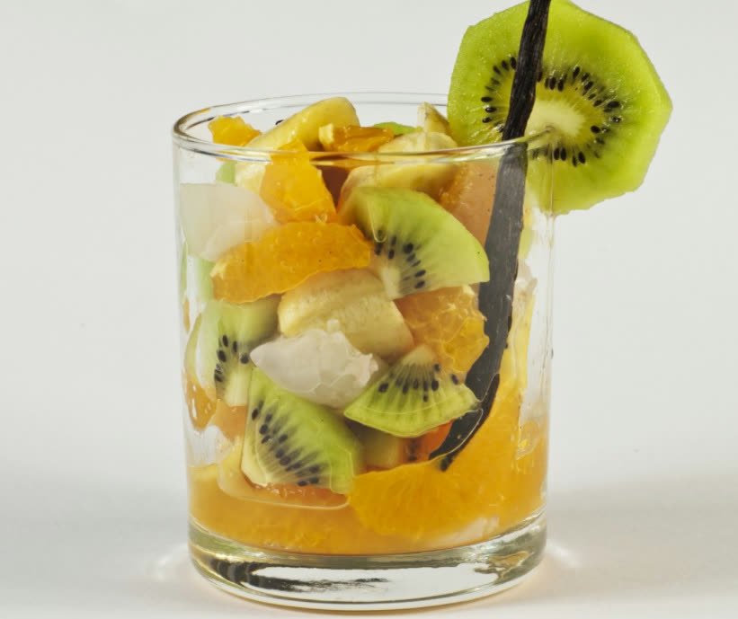
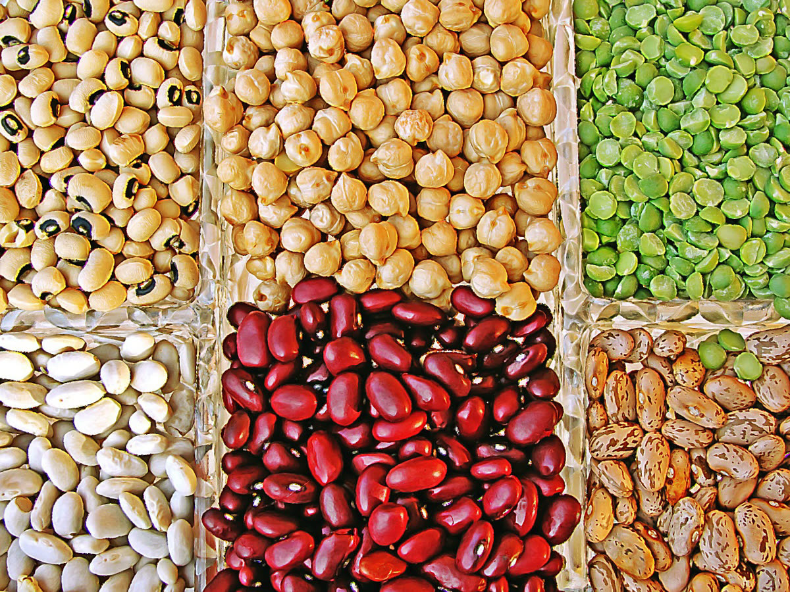
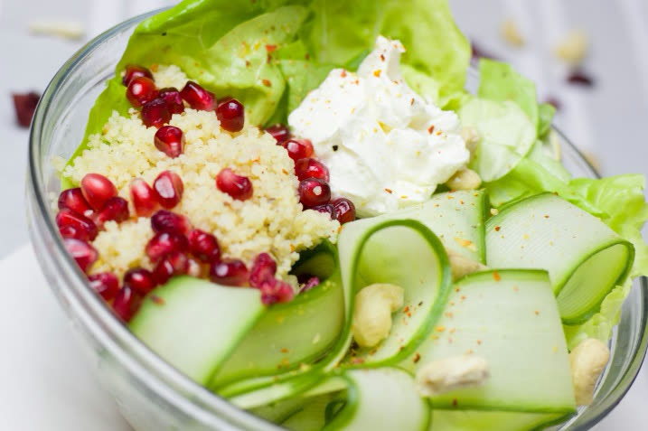
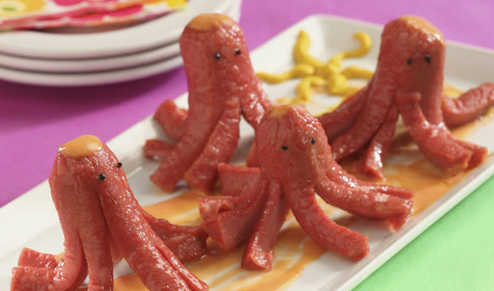

Blog
Nutrición, temporada y vida escolar
Artículos sobre alimentación infantil publicados originalmente en el blog de Terkor.
-

Hábitos saludables
GUERRA A LAS FRITURAS
En TERKOR, como especialistas en catering para colectividades, apostamos por un modo de vida saludable basado en determinados conceptos. Uno de ellos…
-

Nutrición
POR QUÉ COMER (MÁS) PESCADO EN EXÁMENES
Sí. Las verduras y el pescado no son precisamente santo de devoción de niños y menos aún en los adolescentes. Las primeras por sus olores y los segund…
-
Temporada
LA ALIMENTACIÓN EN PRIMAVERA
La llegada de la primavera trae numerosos cambios en la vida de los más pequeños. El buen tiempo se asocia con una mayor cantidad de actividades al ai…
-
Rendimiento escolar
QUÉ COMER EN EXÁMENES
A punto de terminar el segundo trimestre el curso escolar entra en la recta final. Es el momento de darlo todo, centrarse en lo importante y asimilar…
-
Dietas especiales
UNA CORRECTA ALIMENTACIÓN PARA CELIACOS: EL GLUTEN
En los últimos años hemos asistido a un aumento considerable de niños con intolerancia al gluten (celiacos); y ese problema se ha trasladado tanto a l…
-

Nutrición
CÓMO INCORPORAR 5 RACIONES DE FRUTA Y VERDURA
Uno de los caballos de batalla de las familias es cómo introducir 5 raciones de fruta y verdura. Habida cuenta que tanto niños como adultos deberíamos…
-

Eventos
PREPARANDO LA FIESTA DE CUMPLEAÑOS
Desde que el niño está en primaria, y a poca vida social que haga, le aseguramos un mínimo de 10 cumpleaños de amiguitos del colegio. Una decena de fi…
-

Nutrición
PREPARANDO MENÚS SANOS Y EQUILIBRADOS
En TERKOR –empresa de catering especializada en colegios y colectividades- preparamos a diario miles de menús para nuestros clientes –colegios y resid…
-

Nutrición
¿SABRÍAS IDENTIFICAR UNA ALERGIA DE UNA INTOLERANCIA ALIMENTARIA?
En TERKOR ofrecemos una amplia variedad de menús para usuarios que sufren distintas alergias, intolerancias y/o dietas especiales. Para ellos elaboram…
-

Nutrición
DISEÑANDO MENÚS (VISUALMENTE) ATRACTIVOS
Lograr que los niños coman todo lo que se sirve en el plato, en el colegio y en casa, a veces puede suponer un problema de cierta consideración. El “n…
¿Alguna duda sobre los menús de su centro?
Nuestro equipo de nutrición le atiende directamente.